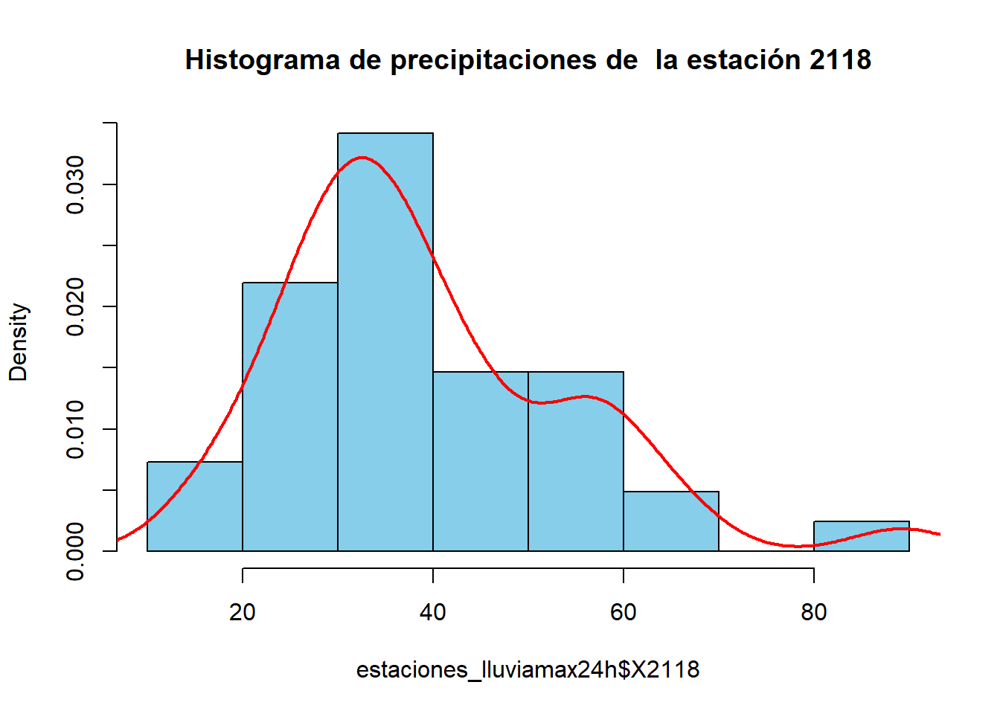
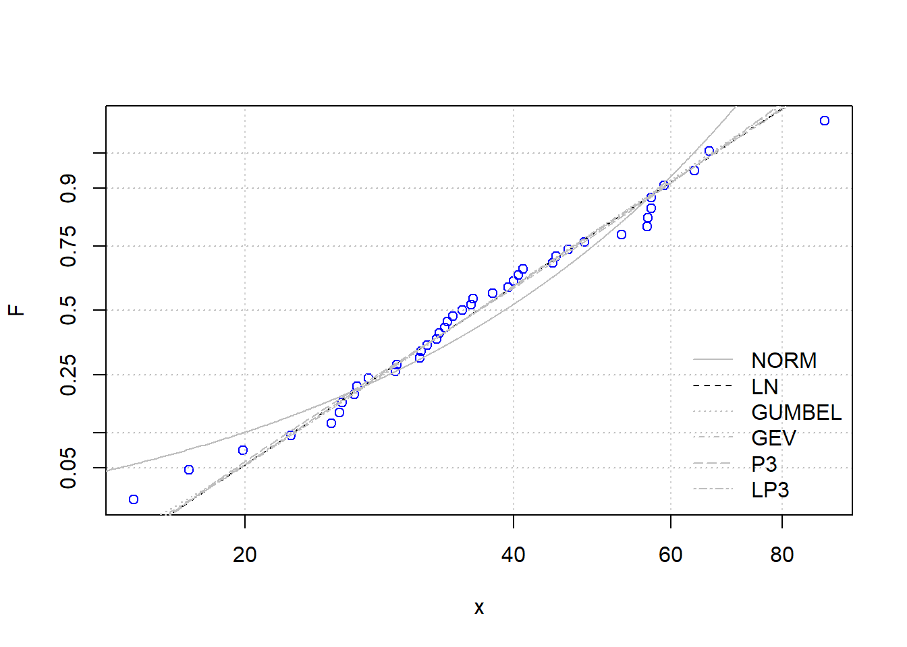

Capítulo 3 Modelo meteorológico
En el análisis hidrológico de una cuenca, el estudio de los datos climatológicos es fundamental para dimensionar adecuadamente la precipitación que alimenta la red de drenaje. La serie temporal de interés en este caso es la de valores mensuales de la precipitación máxima en 24 horas, ya que esta variable es la más ampliamente disponible según la Comisión Nacional del Agua (CONAGUA 1987). Esta variable sirve como entrada en el modelo hidrológico para simular el ciclo hidrológico y predecir el suministro de agua en la región. Debido a la naturaleza aleatoria de la precipitación, es necesario abordar el ciclo hidrológico desde un enfoque probabilístico.
A fin de generar un modelo probabilístico robusto, se han estudiado diferentes metodologías para el tratamiento de series temporales de datos climatológicos, con el propósito de homogeneizar los datos, identificar y tratar valores faltantes y atípicos. En este contexto, RStudio se presenta como una herramienta valiosa, ya que permite explorar las metodologías propuestas por diversos autores, aprovechando el poder computacional del software estadístico.
Para el trabajo con los datos climatológicos, se ha decidido utilizar la librería climatol (Guijarro 2024), debido a que se basa en las guías de homogeneización establecidas por la Organización Meteorológica Mundial y ha sido referenciada en comunidades de hidrólogos.
En cuanto a la selección de las distribuciones probabilísticas de los eventos hidrológicos futuros, se utiliza principalmente la librería nsRFA (Viglione et al. 2023), ya que ofrece una colección de herramientas estadísticas para la aplicación objetiva (no supervisada) de los métodos de Análisis de Frecuencia Regional en Hidrología. En otras palabras, permite al hidrólogo ajustar funciones de distribución a las curvas de crecimiento regionales empíricas haciendo uso de modelos de aprendizaje automático.
En los últimos años, se han realizado numerosos estudios en diferentes países sobre el análisis regional de frecuencias de precipitaciones (Domínguez et al. 2018). Por tanto, el uso de estas aplicaciones no supervisadas puede ser de gran valor para la creación de modelos probabilísticos que permitan estimar de manera confiable las tormentas de diseño, contribuyendo así a una gestión eficiente y sostenible de los recursos hídricos en la cuenca.
3.1 Selección de estaciones climatológicas
En el proceso de modelación hidrológica, la selección adecuada de estaciones climatológicas es crucial para garantizar la calidad y representatividad de los datos de precipitación utilizados. En el presente estudio, el criterio para determinar la cantidad de estaciones a considerar se fundamenta en las recomendaciones de la librería climatol, la cual sugiere el uso de al menos seis estaciones para obtener mejores resultados en la homogeneización de los datos climatológicos.
Afortunadamente, la cuenca en estudio cuenta con un número suficiente de estaciones climatológicas para cumplir con este criterio. Las tablas con los datos climatológicos de las seis estaciones seleccionadas fueron descargadas del portal de CONAGUA e importadas en RStudio para ser tratadas mediante las funciones de la librería climatol.
La selección de estaciones climatológicas representativas es un paso crucial en el análisis hidrológico, ya que los datos de precipitación obtenidos servirán como entrada en el modelo hidrológico para simular el ciclo hidrológico y predecir el suministro de agua en la región. Una adecuada cobertura espacial de las estaciones garantiza que se capturen las variaciones locales en los patrones de precipitación, lo cual es esencial para obtener estimaciones precisas de los caudales y volúmenes de escorrentía.
Además de la cantidad de estaciones, es importante considerar otros factores como la distribución espacial, la longitud y calidad de los registros históricos, y la presencia de posibles fuentes de error o inconsistencias en los datos. La aplicación de técnicas de homogeneización, como las proporcionadas por la librería climatol, permiten identificar y tratar valores atípicos o faltantes, mejorando la confiabilidad de los datos utilizados en el modelo hidrológico.

Figura 3.1: Polígonos de Voronoi para analizar la influencia de las estaciones en la subcuenca R. Guadalupe
Se muestra una extracción de la tabla 3.1 con las precipitaciones extremas de la estación 2001 . Las 6 tablas originales se encuentran en el Apéndice del Modelo Meteorológico.
| AÑO | ENE | FEB | MAR | ABR | MAY | JUN | JUL | AGO | SEP | OCT | NOV | DIC |
|---|---|---|---|---|---|---|---|---|---|---|---|---|
| 1969 | 19.5 | 30.0 | 15.0 | 2.5 | 5.5 | 0.0 | 0.0 | 0.0 | 0.0 | 0.0 | 6.5 | 9.5 |
| 1970 | 2.0 | 30.0 | 29.0 | 3.8 | 0.0 | 0.0 | 0.0 | 2.5 | 0.0 | 1.5 | 21.0 | 24.0 |
| 1971 | 9.0 | 14.1 | 2.0 | 12.5 | 9.0 | 0.0 | 0.0 | 4.0 | 4.5 | 13.5 | 0.5 | 9.5 |
| 1972 | 0.0 | 2.0 | 0.0 | 1.0 | 3.0 | 37.0 | 0.0 | 0.0 | 1.5 | 26.0 | 21.0 | 17.5 |
| 1973 | 11.5 | 17.0 | 23.5 | 2.0 | 0.5 | 0.0 | 0.0 | 0.5 | 0.0 | 0.0 | 12.0 | 2.0 |
| 1974 | 39.0 | 4.0 | 19.6 | 3.0 | 0.0 | 0.0 | 22.8 | 0.0 | NA | 18.0 | 3.5 | 9.5 |
| 1975 | 10.5 | 13.5 | 19.5 | 19.0 | 0.0 | 1.0 | 1.5 | 2.0 | 0.4 | 1.0 | 17.5 | 6.0 |
| 1976 | 0.0 | 37.0 | 14.5 | 6.7 | 0.0 | 0.0 | 1.5 | 0.4 | 34.5 | 2.1 | 40.0 | 23.0 |
| 1977 | 10.0 | 11.0 | 12.0 | 3.2 | 17.0 | 2.8 | 0.0 | 70.0 | 0.0 | 12.5 | 6.5 | 49.5 |
| 1978 | 38.5 | 33.0 | 35.5 | 9.5 | 0.0 | 0.0 | 0.0 | 0.0 | 8.5 | 0.0 | 38.0 | 28.5 |
3.2 Homogenización de datos climatológicos
Se tiene que preparar la información para presentarla conforme los requerimientos de las funciones de la librería climatol.
La función csv2climatol ocupa un archivo con el código de las estaciones, sus coordenadas geográficas en decimales y su nombre; y otro archivo con los datos climatológicos.
Para este segundo archivo, el algoritmo toma los archivos de cada estación en formato csv, borra los años que tengan al menos una NA y genera un archivo único.
La metodología estadística usada para la homogenización de datos es la Standard Normal Homogeneity Test (SNHT) que usa la siguiente expresión para calcular la prueba estadística.
\[ T_k = k z_1^2 + \left(n - k\right) z_2^2 \qquad (1 \le k < n) \]
donde
\[ \begin{array}{l l} z_1 = \frac{1}{k} \sum_{i=1}^k \frac{x_i - \bar{x}}{\sigma} & z_2 = \frac{1}{n-k} \sum_{i=k+1}^n \frac{x_i - \bar{x}}{\sigma}. \\ \end{array} \]
El valor crítico es:
\[T = \max T_k\]
El algoritmo realiza una serie de pasos y presenta parámetros estadigráficos de la prueba, el error cuadrático medio del valor estimado, el porcentaje de los datos originales, las anomalías presentes en los diferentes intervalos de confianza y el rango derecho del intervalo de confianza para la prueba estadística. El algoritmo también genera archivos que se pueden usar para cálculos posteriores, así como un reporte de los diferentes resultados que genera el proceso de homogenización de datos como el control de calidad de las series, el resumen de los datos disponibles, gráficos de detección y corrección de anomalías, etc.
HOMOGEN() APPLICATION OUTPUT (From R's contributed package 'climatol' 4.1.0)
=========== Homogenization of precipitacion, 1980-2020. (Sat May 11 17:47:37 2024)
Parameters: varcli=precipitacion, anyi=1980, anyf=2020, test=snht, nref=10 10 4, std=NA, swa=NA, ndec=1, niqd=4 1, dz.max=0.01, dz.min=-0.01, cumc=NA, wd=0 0 100, inht=25, sts=5, maxdif=0.05, maxite=999, force=FALSE, wz=0.001, mindat=NA, onlyQC=FALSE, annual=mean, ini=NA, na.strings=NA, vmin=NA, vmax=NA, hc.method=ward.D2, nclust=300, cutlev=NA, grdcol=#666666, mapcol=#666666, expl=FALSE, metad=FALSE, sufbrk=m, tinc=NA, tz=utc, rlemin=NA, rlemax=NA, cex=1.1, uni=NA, raway=TRUE, graphics=TRUE, verb=TRUE, logf=TRUE, snht1=NA, snht2=NA, gp=NA
Data matrix: 492 data x 6 stations
-------------------------------------------
Stations in the 2 clusters :
$`1`
[1] 1 4 5 6
$`2`
[1] 2 3
---------------------------------------------
Computing inter-station distances ... 1 2 3 4 5
========== STAGE 1 (SNHT on overlapping temporal windows) ===========
Calculation of missing data with outlier removal
(Suggested data replacements are provisional)
Station(rank) Date: Observed -> Suggested (Anomaly, in std. devs.)
2001(4) 1991-02-01: 42 -> 80.7 (-6.5)
2004(5) 1991-02-01: 132 -> 67.3 (7.35)
Performing shift analysis on the 6 series...
========== STAGE 2 (SNHT on the whole series) =======================
Calculation of missing data with outlier removal
(Suggested data replacements are provisional)
Station(rank) Date: Observed -> Suggested (Anomaly, in std. devs.)
(No detected outliers)
Performing shift analysis on the 6 series...
========== STAGE 3 (Final calculation of all missing data) ==========
Computing inter-station weights... (done)
Calculation of missing data with outlier removal
(Suggested data replacements are provisional)
The following lines will have one of these formats:
Station(rank) Date: Observed -> Suggested (Anomaly, in std. devs.)
Iteration Max_data_difference (Station_code)
2 0.413 (2077)
3 0.235 (2077)
4 0.133 (2077)
5 0.075 (2077)
6 0.042 (2077)
Prescribed convergence reached
Last series readjustment (please, be patient...)
======== End of the homogenization process, after 0.93 secs
----------- Final calculations :
SNHT: Standard normal homogeneity test (on anomaly series)
Min. 1st Qu. Median Mean 3rd Qu. Max.
2.900 6.175 9.250 9.183 9.625 18.800
RMSE: Root mean squared error of the estimated data
Min. 1st Qu. Median Mean 3rd Qu. Max.
5.689 8.255 8.598 8.269 8.797 9.724
POD: Percentage of original data
Min. 1st Qu. Median Mean 3rd Qu. Max.
45.00 57.25 81.00 75.00 91.25 99.00
SNHT RMSE POD Code Name
1 5.2 8.6 45 2164 EJIDO_EL_PORVENIR
2 18.8 8.6 93 2118 VALLE_DE_SAN_RAFAEL
3 9.4 9.7 76 2036 OLIVARES_MEXICANOS
4 9.7 5.7 99 2001 AGUACALIENTE
5 9.1 8.2 86 2004 IGNACIO_ZARAGOZA_BELEN
6 2.9 8.9 51 2077 LA_MISION
Frequency distribution tails of residual anomalies and SNHT
Left tail of standardized anomalies:
0.1% 0.2% 0.5% 1% 2% 5% 10%
-5.5 -5.1 -3.4 -2.9 -2.3 -1.5 -0.8
Right tail of standardized anomalies:
90% 95% 98% 99% 99.5% 99.8% 99.9%
0.9 1.5 2.7 3.6 4.2 5.0 6.1
Right tail of SNHT on windows of 120 terms with up to 4 references:
90% 95% 98% 99% 99.5% 99.8% 99.9%
13.2 13.8 14.1 14.2 14.3 14.3 14.3
Right tail of SNHT with up to 4 references:
90% 95% 98% 99% 99.5% 99.8% 99.9%
14.2 16.5 17.9 18.3 18.6 18.7 18.8
----------- Generated output files: -------------------------
precipitacion_1980-2020.txt : Text output of the whole process
precipitacion_1980-2020_out.csv : List of corrected outliers
precipitacion_1980-2020_brk.csv : List of corrected breaks
precipitacion_1980-2020.pdf : Diagnostic graphics
precipitacion_1980-2020.rda : Homogenization results. Postprocess with (examples):
dahstat('precipitacion',1980,2020) # averages
dahstat('precipitacion',1980,2020,stat='tnd') #OLS trends and p-values
dahstat('precipitacion',1980,2020,stat='series') #homogenized series
dahgrid('precipitacion',1980,2020,grid=YOURGRID) #homogenized grids
... (See other options in the package documentation)Se extrae uno de los archivos generados por la función para poder construir la tabla de estaciones con los datos climatológicos homogenizados 3.2.
| Year | X2164 | X2118 | X2036 | X2001 | X2004 | X2077 |
|---|---|---|---|---|---|---|
| 1980 | 112.8 | 66.3 | 107.0 | 112.0 | 125.5 | 115.3 |
| 1981 | 28.2 | 25.0 | 25.5 | 27.5 | 30.0 | 27.3 |
| 1982 | 41.1 | 35.0 | 41.5 | 29.0 | 44.2 | 41.2 |
| 1983 | 59.5 | 48.0 | 80.0 | 63.5 | 61.0 | 62.1 |
| 1984 | 38.6 | 36.0 | 42.0 | 26.9 | 35.0 | 38.6 |
| 1985 | 43.1 | 25.5 | 45.5 | 42.0 | 45.0 | 44.4 |
| 1986 | 32.1 | 32.0 | 28.5 | 37.0 | 31.0 | 30.9 |
| 1987 | 41.4 | 29.5 | 80.0 | 33.5 | 50.0 | 46.2 |
| 1988 | 51.1 | 57.0 | 60.0 | 50.5 | 35.0 | 50.3 |
| 1989 | 20.2 | 17.3 | 20.0 | 14.0 | 41.0 | 20.2 |
| 1990 | 23.3 | 19.9 | 22.0 | 19.5 | 24.0 | 23.1 |
| 1991 | 77.3 | 56.4 | 91.0 | 65.3 | 76.1 | 81.2 |
| 1992 | 42.7 | 33.5 | 42.7 | 42.0 | 41.5 | 43.8 |
| 1993 | 69.4 | 52.8 | 89.0 | 49.5 | 67.6 | 72.1 |
| 1994 | 35.1 | 40.0 | 26.0 | 25.0 | 35.0 | 33.3 |
| 1995 | 54.5 | 57.0 | 61.5 | 57.5 | 71.0 | 58.0 |
| 1996 | 33.0 | 26.7 | 35.3 | 26.0 | 44.0 | 34.3 |
| 1997 | 36.6 | 44.6 | 15.3 | 39.0 | 59.0 | 34.6 |
| 1998 | 62.1 | 46.0 | 70.2 | 62.0 | 47.0 | 63.2 |
| 1999 | 21.6 | 37.9 | 21.0 | 19.0 | 20.4 | 21.3 |
| 2000 | 21.0 | 32.8 | 24.3 | 34.0 | 32.0 | 27.0 |
| 2001 | 28.0 | 29.6 | 26.5 | 29.0 | 24.0 | 29.0 |
| 2002 | 21.0 | 15.0 | 16.5 | 10.0 | 16.0 | 20.0 |
| 2003 | 24.5 | 31.4 | 41.6 | 43.0 | 38.6 | 69.0 |
| 2004 | 125.0 | 63.7 | 69.1 | 70.0 | 42.0 | 80.0 |
| 2005 | 26.5 | 34.2 | 29.8 | 23.0 | 28.4 | 36.0 |
| 2006 | 24.0 | 25.7 | 28.0 | 24.0 | 23.7 | 22.8 |
| 2007 | 45.0 | 41.0 | 54.5 | 43.0 | 45.0 | 23.0 |
| 2008 | 34.0 | 27.5 | 42.6 | 33.0 | 45.0 | 62.0 |
| 2009 | 53.0 | 33.7 | 23.5 | 17.5 | 51.0 | 57.0 |
| 2010 | 74.0 | 89.2 | 75.0 | 66.4 | 62.0 | 60.0 |
| 2011 | 40.0 | 59.0 | 44.0 | 48.3 | 82.0 | 65.0 |
| 2012 | 46.1 | 39.4 | 45.0 | 37.7 | 57.0 | 46.0 |
| 2013 | 49.0 | 40.5 | 30.0 | 46.7 | 28.0 | 38.0 |
| 2014 | 22.0 | 33.0 | 22.5 | 21.4 | 21.0 | 31.0 |
| 2015 | 28.0 | 26.5 | 67.0 | 20.2 | 48.0 | 34.5 |
| 2016 | 53.0 | 31.5 | 76.5 | 33.8 | 50.0 | 43.0 |
| 2017 | 63.0 | 44.2 | 58.7 | 33.5 | 38.0 | 70.5 |
| 2018 | 30.0 | 22.5 | 52.0 | 32.5 | 25.5 | 30.0 |
| 2019 | 57.9 | 35.8 | 57.5 | 46.5 | 73.0 | 42.5 |
| 2020 | 24.5 | 56.5 | 33.0 | 22.0 | 26.0 | 25.0 |
Se genera el gráfico 3.2 para visualizar la distribución temporal de los datos climatológicos de las 6 estaciones homogenizadas.
Figura 3.2: Distribución de precipitaciones homogenizadas
Se ha optado por aplicar la prueba de \(X\)2 para la prueba de independencia a los datos climatológicos homogenizados, en donde, para determinar que las muestras son independientes se revisa p>0.05.
$X2164
Pearson's Chi-squared testdata: contingency_table X-squared = 1476, df = 1440, p-value = 0.249
$X2118
Pearson's Chi-squared testdata: contingency_table X-squared = 1599, df = 1560, p-value = 0.2406
$X2036
Pearson's Chi-squared testdata: contingency_table X-squared = 1599, df = 1560, p-value = 0.2406
$X2001
Pearson's Chi-squared testdata: contingency_table X-squared = 1476, df = 1440, p-value = 0.249
$X2004
Pearson's Chi-squared testdata: contingency_table X-squared = 1394, df = 1360, p-value = 0.2548
$X2077
Pearson's Chi-squared testdata: contingency_table X-squared = 1640, df = 1600, p-value = 0.2379
Conforme a los resultados de las pruebas de independencia se puede decir que las muestras son independientes.
3.3 Funciones de las distribuciones probabilísticas de las estaciones climatológicas
En el ámbito de la hidrología, existen diversas funciones de distribución de probabilidad que se han empleado con éxito para modelar eventos hidrológicos extremos, como las precipitaciones máximas. Entre las funciones más comúnmente utilizadas se encuentran: Normal, Log-Normal, Exponencial, Gamma, Pearson tipo III (o Gamma de tres parámetros), Log-Pearson tipo III y de valores extremos (VE tipos I, II y III; o respectivamente Gumbel, Frechet y Weibull).
En este estudio se comparan las funciones Normal, Log-Normal, Gumbel, Pearson 3 parámetros, Log Pearson 3 parámetros y de Valor Extremo Generalizado por 3 parámetros, haciendo uso de las funciones de nsRFA.
Citando la documentación de nsRFA: “El problema de la selección de modelos se puede formalizar de la siguiente manera: se dispone de una muestra de n datos, \(D = (x~1~, ..., x~n~)\), ordenados de manera ascendente, muestreados de una distribución parental desconocida f(x); se utilizan Nm modelos operativos, \(M~j~, j = 1, ...\), Nm, para representar los datos. Los modelos operativos son en forma de distribuciones de probabilidad, Mj = gj(x, \(\hat{\theta}\)), con parámetros \(\hat{\theta}\) estimados a partir de la muestra de datos disponible D. El objetivo de la selección de modelos es identificar el modelo Mopt que mejor se adapta para representar los datos, es decir, el modelo que está más cercano en algún sentido a la distribución parental f(x). Aquí se consideran tres criterios diferentes de selección de modelos, a saber, el Criterio de Información de Akaike (AIC), el Criterio de Información Bayesiano (BIC) y el Criterio de Anderson-Darling (ADC). De los tres métodos, los dos primeros pertenecen a la categoría de enfoques clásicos de la literatura, mientras que el tercero se deriva de una interpretación heurística de los resultados de una prueba estándar de bondad de ajuste.” (Viglione et al. 2023)
El algoritmo grafica la función de la distribución empírica de la muestra (posición de trazado de Weibull) en una gráfica de probabilidad log-normal, y grafica las distribuciones candidatas (cuyos parámetros se evalúan con la técnica de máxima verosimilitud).
Para cada estación se documenta:
- histograma,
- los resultados de la función MSClaio2008 de la librería nsRFA (Viglione et al. 2023) y
- la tabla con las distribuciones de eventos extremos para diferentes períodos de retorno.
En este capítulo, se presentará la información completa de una estación climatológica como ejemplo. Para el resto de las estaciones solo se presenta la tabla con la distribución de probabilidad ajustada a los parámetros de la función recomendada por MSClaio2008. La información completa de las 5 estaciones restantes se encuentra en el Apéndice del Modelo Meteorológico.
Se presenta la información de la estación 2118 para comparar las distribuciones probabilísticas Gumbel y Log-Normal. Ya que en algunos reportes puede ser obligatorio calcular las disrtibuciones probabilísticas usando la distribución de Gumbel, sin embargo para este estudio, ocuparemos las distribuciones recomendadas por los resultados que arroja la función MSClaio2008.

------------------------
Akaike Information Criterion (AIC):
NORM LN GUMBEL P3 LP3 GEV
342.0 334.0 334.1 336.0 336.0 336.0
------------------------
Corrected Akaike Information Criterion (AICc):
NORM LN GUMBEL P3 LP3 GEV
342.3 334.3 334.4 336.7 336.7 336.7
------------------------
Bayesian Information Criterion (BIC):
NORM LN GUMBEL P3 LP3 GEV
345.4 337.4 337.5 341.2 341.2 341.2
------------------------
Anderson-Darling Criterion (ADC):
NORM LN GUMBEL P3 LP3 GEV
0.59558 0.05712 0.05863 0.08499 0.07964 0.07092
Tested distributions:
[1] NORM LN GUMBEL P3 LP3 GEV
------------------------
Chosen distributions:
AIC AICc BIC ADC
LN LN LN LN
whose Maximum-Likelihood parameters are:
NORM parameters of log(x): 3.594576 0.3719667 
| Tr | Precipitación_2118_LN | Precipitación_2118_Gumbel |
|---|---|---|
| 2 | 36.4003 | 36.4937 |
| 5 | 49.7809 | 49.9898 |
| 10 | 58.6314 | 58.9254 |
| 20 | 67.1149 | 67.4966 |
| 25 | 69.8097 | 70.2155 |
| 50 | 78.1400 | 78.5912 |
| 100 | 86.4789 | 86.9050 |
| 200 | 94.8881 | 95.1885 |
| 500 | 106.1822 | 106.1170 |
| 1000 | 114.8974 | 114.3765 |
| 5000 | 135.8253 | 133.5454 |
| 10000 | 145.1730 | 141.7995 |
Realmente las dos distribuciones presentan resultados muy similares. Por lo que no representa problema escoger una sobre la otra.
Después de procesar las 5 estaciones, se obtiene la tabla final con las distribuciones de las 6 estaciones.
| Tr | Precipitación_2164_P3 | Precipitación_2077_P3 | Precipitación_2004_LN | Precipitación_2001_LN | Precipitación_2036_P3 | Precipitación_2118_LN |
|---|---|---|---|---|---|---|
| 2 | 448.9151 | 406.7378 | 40.8746 | 34.3628 | 295.6387 | 36.4003 |
| 5 | 538.7503 | 488.5166 | 58.5914 | 51.3484 | 364.1850 | 49.7809 |
| 10 | 590.0999 | 535.2810 | 70.7256 | 63.3445 | 403.8606 | 58.6314 |
| 20 | 634.8386 | 576.0345 | 82.6192 | 75.3371 | 438.6752 | 67.1149 |
| 25 | 648.2736 | 588.2745 | 86.4461 | 79.2399 | 449.1710 | 69.8097 |
| 50 | 687.7615 | 624.2538 | 98.4140 | 91.5711 | 480.1210 | 78.1400 |
| 100 | 724.5775 | 657.8037 | 110.5881 | 104.2938 | 509.1040 | 86.4789 |
| 200 | 759.3598 | 689.5044 | 123.0450 | 117.4809 | 536.5896 | 94.8881 |
| 500 | 802.9189 | 729.2095 | 140.0360 | 135.7157 | 571.1421 | 106.1822 |
| 1000 | 834.4028 | 757.9111 | 153.3360 | 150.1706 | 596.2004 | 114.8974 |
| 5000 | 903.7517 | 821.1406 | 185.8790 | 186.1329 | 651.6234 | 135.8253 |
| 10000 | 932.3136 | 847.1855 | 200.6677 | 202.7260 | 674.5340 | 145.1730 |
Ahora, se obtiene la precipitación ponderada de las 6 estaciones. Se presentan dos propuestas para obtener el valor ponderado.
En la primera propuesta, se asignaron pesos a cada estación tomando como criterio los resultados de la calidad/singularidad de las estaciones del proceso de homogenización.
| Tr_años | lluvia_max_24h |
|---|---|
| 2 | 142.7981 |
| 5 | 178.8926 |
| 10 | 201.0112 |
| 20 | 221.2652 |
| 25 | 227.5380 |
| 50 | 246.5143 |
| 100 | 264.9702 |
| 200 | 283.1283 |
| 500 | 306.9242 |
| 1000 | 324.9012 |
| 5000 | 366.9936 |
| 10000 | 385.4010 |
En la segunda propuesta se obtiene la precipitación ponderada por polígonos de Voronoi.
| Tr | Precipitacion |
|---|---|
| 2 | 186.4874 |
| 5 | 230.0740 |
| 10 | 256.1841 |
| 20 | 279.7196 |
| 25 | 286.9394 |
| 50 | 308.5895 |
| 100 | 329.3823 |
| 200 | 349.5995 |
| 500 | 375.7551 |
| 1000 | 395.2753 |
| 5000 | 440.2426 |
| 10000 | 459.6075 |
Las precipitaciones ponderadas por polígonos de Voronoi tienen valores más elevados que las precipitaciones ponderadas usando el criterio de la calidad/singularidad de las estaciones. Para los cálculos posteriores se usa la ponderación por polígonos de Voronoi.
3.4 Curvas IDTR y PDTR
En el análisis hidrológico, las características de las precipitaciones se definen mediante tres variables: magnitud o lámina, duración y frecuencia. La magnitud de lluvia se refiere a la precipitación total ocurrida (en milímetros) durante la duración de la tormenta, mientras que la frecuencia se expresa como el período de retorno, el cual representa el tiempo promedio en años en el que un evento puede ser igualado o excedido, al menos una vez, en promedio (Daniel Francisco Campos Aranda 1990).
Las curvas Intensidad-Duración-Período de Retorno (IDTR) son herramientas gráficas que permiten definir las características de las tormentas en una región específica, considerando las variables mencionadas.
Para obtener las curvas IDTR, es necesario transformar los datos de precipitación máxima en 24 horas a precipitaciones de diferentes duraciones y períodos de retorno. Debido a la escasez de registros de lluvia de corta duración, ha surgido la necesidad de utilizar las relaciones promedio entre lluvias encontradas en otros países (Daniel Francisco Campos Aranda 1990). La Secretaría de Comunicaciones y Transportes (SCT) ha documentado estas relaciones en forma de isoyetas, las cuales permiten representar cartográficamente los puntos terrestres que comparten el mismo indicador de pluviosidad media anual.

Figura 3.3: Ejemplo del uso de las isoyetas para calcular las precipitaciones asociadas al Tr
Para el cálculo de las curvas de Intensidad - Duración - Tiempo de Retorno se usa la metodología de Chen modificado.
Se importan a RStudio las capas vectoriales de la cuenca cortadas por mapas de Isoyetas (las vigentes datan del año 2015). Estos mapas de isoyetas se han georeferenciado para poder usar las herramientas de QGIS y superponer la cuenca para obtener la pluviosidad asociada a la cuenca.
Se localizan las intensidades con duración de 60 minutos para los periodos de retorno de 10, 25 y 50 años.
P1hr10años: 30.28211 mm/hr
P1hr25años: 36.64212 mm/hr
P1hr50años: 43.0048 mm/hr
Se corrigen las frecuencias por factor de Weiss y se obtienen los diferentes parámetros que se ocupan para el cálculo de la tabla IDTR.
Primero se obteniene Rprom, se debe revisar si cae en rango [0.1-0.6] o [0.2-0.7] para cálculos posteriores.
Rprom: 0.1046057
Dependiendo del rango en el que este Rprom se usan diferentes ecuaciones para obtener los parámetros a,b,c.
Parámetro a: 4.748782
Parámetro b: -2.644634
Parámetro c: 0.3202305
Se obtiene F.
F: 1.285725
Con los parámetros calculados se procede a graficar las curvas IDTR.
Figura 3.4: Gráfico de las curvas Intensidad - Duración - Tiempo de Retorno
Después se hacen los cálculos necesarios para obtener las curvas PDTR. La memoria de cálculo se encuentra en el Apéndice del Modelo Meteorológico.
Figura 3.5: Gráfico de las curvas Precipitación - Duración - Tiempo de Retorno
3.5 Hietograma
Cuando no se dispone de registros climáticos e hidrométricos completos, el proceso de conversión de precipitación en escorrentía se aborda mediante la modelación de la tormenta incidente en la cuenca y la fase terrestre del ciclo hidrológico que se desarrolla en ella. En este enfoque, las tormentas de diseño son el punto de partida para las estimaciones hidrológicas de escurrimientos, tanto en cuencas rurales como urbanas, en ausencia de información hidrométrica directa.
Existen dos tipos fundamentales de tormentas de diseño: históricas y sintéticas o hipotéticas. Las tormentas históricas son eventos severos o extraordinarios que han ocurrido en el pasado y fueron registrados, pudiendo estar bien documentados en relación con los problemas y daños causados a las áreas urbanas y sus sistemas de drenaje. Por otro lado, las tormentas sintéticas o hipotéticas se obtienen a partir del estudio y generalización de un gran número de tormentas severas observadas, con el objetivo de estimar un hietograma que represente las características de las tormentas en la zona de estudio (Aranda 2010).
En el presente estudio, se obtendrá el hietograma de diseño utilizando la metodología propuesta por el NRCS. El período de retorno seleccionado es de 100 años, ya que el punto de control se encuentra en una carretera federal, donde se requieren niveles de protección más estrictos.
Figura 3.6: Hietograma para el Periodo de Retorno 100 años